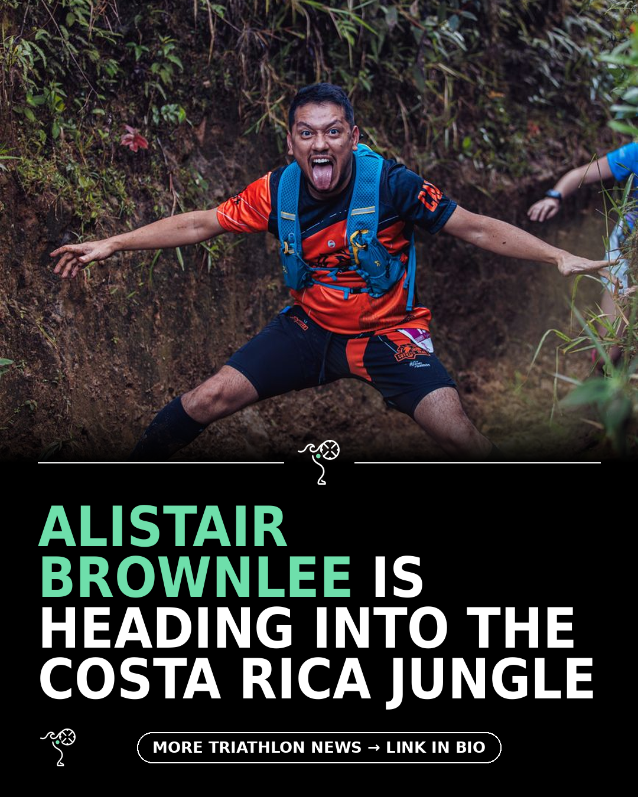

Triathlon News Daily
Wednesday, 19 August 2026 · generated automatically

Today's stories
- Alistair Brownlee swaps the pool for the Costa Rica jungle220 Triathlon
- Supertri Pro Series ends in Jersey with one last showdown220 Triathlon
- A free 12-week Ironman build plan you can start this week220 Triathlon
- Why fins and paddles deserve a spot in your open water bagBlog - A Triathlete's Diary
- How much protein an endurance athlete actually needsBlog - A Triathlete's Diary
- What are the best triathlon wetsuits? Here are our top-10 tried-and-tested picks220 Triathlon